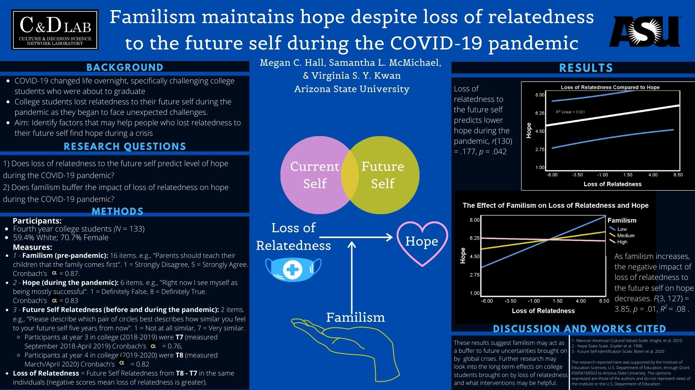

Familism is the sense of responsibility, care, and belonging that people feel toward their families. It has been associated with better overall outcomes for youth. The temporal self and familism have been heavily studied in regards to education and decision-making. However, when the pandemic began, the future became very uncertain, so it was thought that hope, which is heavily associated with better psychological well-being, may deteriorate. One of the first studies I did examined whether familism may allow young adults to remain hopeful in dire circumstances.
For this project, I used longitudinal data that already existed, and was responsible for analyzing it with IBM SPSS Statistics and Hayes’ PROCESS Macro. We hypothesized that:
First, loss of relatedness to the future self during COVID-19 (calculated with two timepoints) would predict hope, measured only at the second timepoint.
Second, familism would act as a buffer, or would moderate this relationship.
Both hypotheses were found to be correct. Findings were presented at the Society of Social and Personality Psychology 2021. Analyses were not preregistered, but the poster and abstract can be found online through the Open Science Forum.
I became more invested in International Psychology as time passed, and joined the American Psychological Association’s Division 52 for International Psychology. I was interested in helping with further research on the effects of the pandemic worldwide, and began coding articles on the effects of COVID-19 worldwide for Division 52’s COVID-19 Response Team. This research has been presented at a symposium and through a paper, and a book with the details of the research this group worked on was published in April, 2023. I worked on a chapter about COVID-19 prevention and ethics; something I have found important through learning about bioethics in my work at TGen. The full copy can be purchased on Amazon or individual chapters can be purchased on Springer’s website.